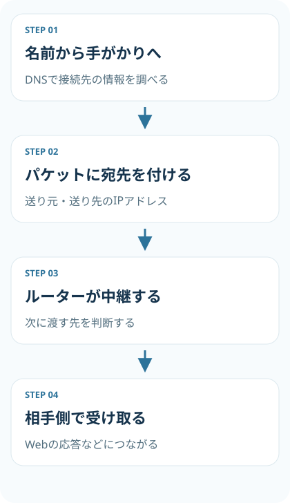

家に郵便物を届けるときは宛先が必要です。ネットワークで情報をやり取りするときにも、どこへ送るかを示す情報が必要になります。その手がかりの一つがIPアドレスです。ただし、家の住所や個人の名前と同じものではありません。今回は、スマホからページを取りに行く場面で役割を見てみます。
01 — DIGITAL BASICS
データの送り元と送り先を示す
インターネットの通信では、データをパケットという単位で扱います。IPは、こうしたデータをネットワーク越しに送るための通信規約です。パケットには送り元と送り先のIPアドレスなどが入り、途中のルーターが次にどこへ渡すかを判断する手がかりになります。
ルーターは、ネットワークとネットワークの間でデータを中継する機器です。すべてのデータが相手まで一本の専用道路を通る、と考える必要はありません。IPが扱うのは、宛先を示してデータを運ぶための仕組みです。ページの意味を理解したり、文章を画面に並べたりするのは、また別の役割です。
この節の参考：資料1
02 — DIGITAL BASICS
ドメイン名との関係は？
人はexample.comのような名前でサイトを指定できます。DNSが、その名前に対応するIPアドレスなどを調べる手助けをします。名前を指定する役割と、通信で使う番号の役割はつながっていますが、同じものではありません。
名前と番号は必ず一対一で固定されるわけでもありません。複数のサイトが同じIPアドレスで提供されることや、一つの名前に複数のIPアドレスが関係することがあります。「IPアドレスさえ見れば、どのページかも全部分かる」という捉え方では、Webの仕組みを説明しきれません。

03 — DIGITAL BASICS
IPv4とIPv6では、番号の長さが違う
IPv4のアドレスは32ビット、IPv6は128ビットの長さです。ビットは0か1で情報を表す単位です。IPv6はIPv4より広いアドレス空間を持つように設計されています。ここでは巨大な総数を暗記するより、「異なる長さのアドレスを使う二つの方式がある」と覚えておきましょう。
表記も違います。IPv4は192.0.2.1のように、数字をドットで区切った形をよく見ます。IPv6は2001:db8::1のようにコロンや英字を含みます。この二つは説明用の例です。IPv6という文字を見ただけで、どのサイトも必ず速くなると判断することはできません。
04 — DIGITAL BASICS
家の中の番号は、他の家でも使われる
家庭や会社の内部では、192.168.1.10のようなプライベートIPv4アドレスが使われることがあります。これは内部のネットワークで使うために用意された範囲です。別の家で同じ番号を使っていても、それぞれの内部で区別できれば成り立ちます。インターネット全体でそのまま一意になる番号ではありません。
また、IPアドレスは人の氏名そのものではありません。どのネットワークにつないだかや割り当て方などに関係し、「一人に一つ、永久に変わらない番号」とは考えないほうが正確です。番号が示す範囲と、人物の特定を分けると、住所というたとえの限界も見えてきます。
REMEMBER
今日覚えておきたい3つのこと
- 01
IPアドレスは、ネットワークで送り元や送り先を示す手がかり。
- 02
ドメイン名とIPアドレスは、役割が違い、一対一とも限らない。
- 03
IPv4は32ビット、IPv6は128ビット。個人の永久番号ではない。
参考資料・情報確認日
情報確認日：2026年11月21日。通信の基本を理解するために一部を簡略化しています。
- RFC 791 — Internet Protocol（1981年9月）
- MDN — What is a Domain Name?
- MDN — Overview of HTTP
- RFC 8200 — Internet Protocol, Version 6（2017年7月）
- RFC 5737 — IPv4 Address Blocks Reserved for Documentation（2010年1月）
- RFC 3849 — IPv6 Address Prefix Reserved for Documentation（2004年7月）
- RFC 1918 — Address Allocation for Private Internets（1996年2月）
- RFC 2131 — Dynamic Host Configuration Protocol（1997年3月）